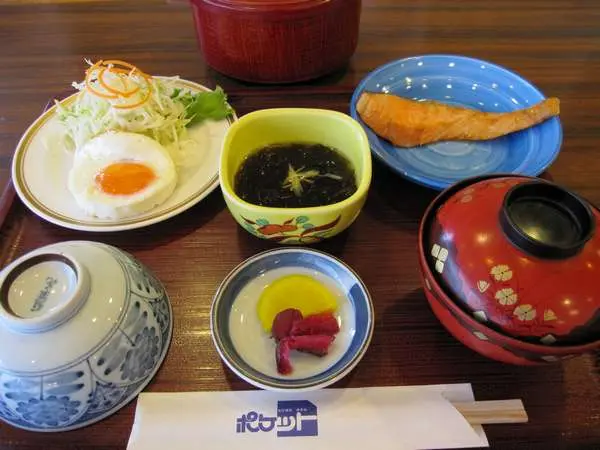
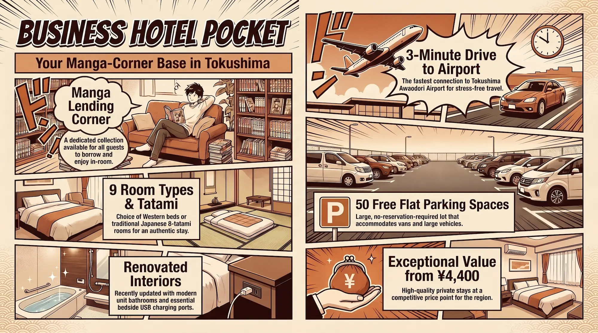
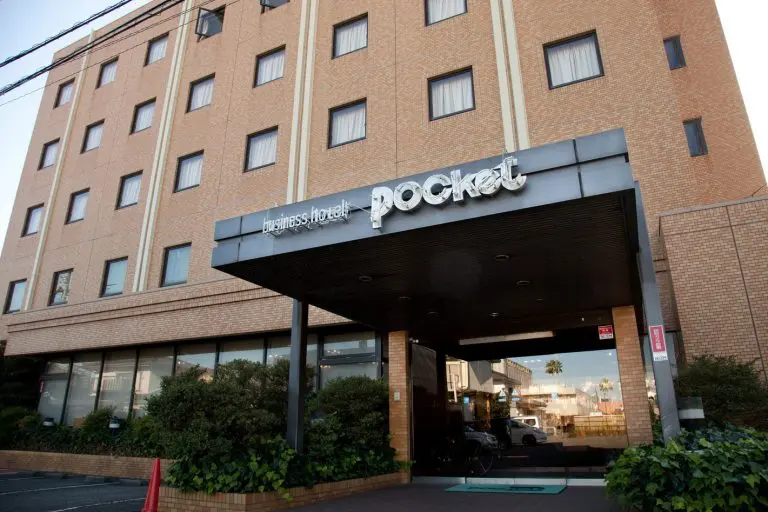
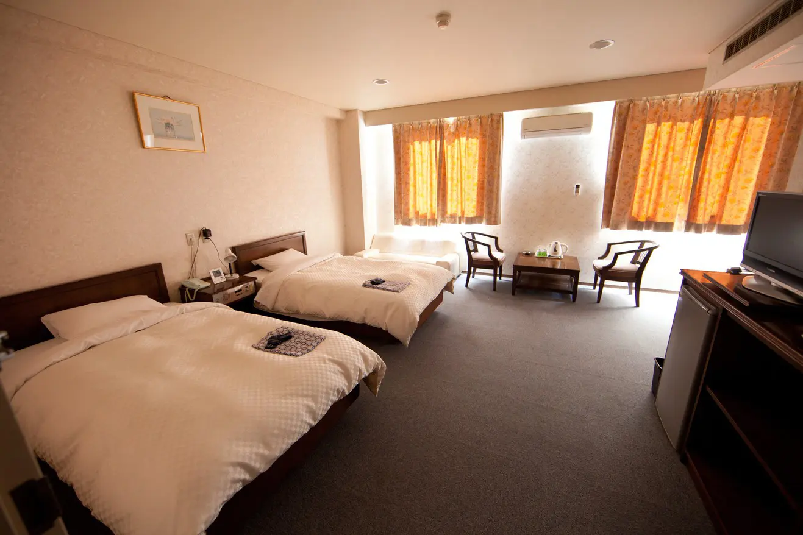
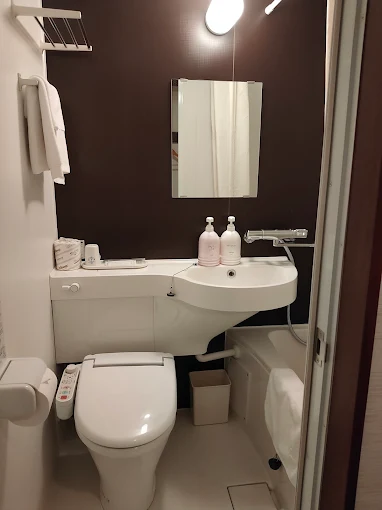
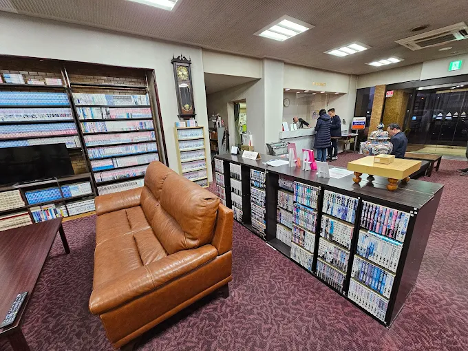
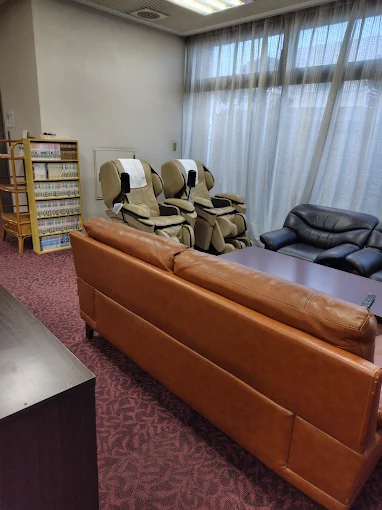
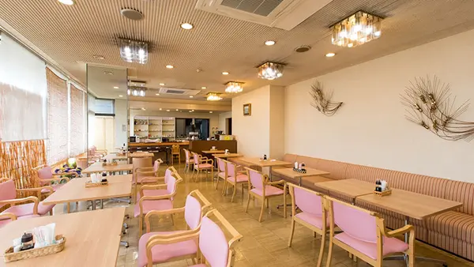

There is a particular kind of hotel that Japan does better than anywhere else on earth: the small, family-managed business hotel that costs almost nothing, gives you a clean room, a solid breakfast, free parking, and then quietly gets out of your way so you can go explore. Business Hotel Pocket — ビジネスホテルポケット — is exactly that hotel, in exactly the right location for a certain kind of traveler. It sits in Matsushige-cho, a modest town in Itano District, Tokushima Prefecture, planted on the narrow strip of Shikoku between Tokushima Airport and the Naruto Strait. Three minutes by car to the terminal. Fifteen minutes to Tokushima city. Ten minutes to Naruto city — the city that shares its name with one of manga's most famous franchises. That geography, combined with a manga lending corner, nine room types, and nightly rates starting at ¥4,400, makes it a property HotelManga cannot overlook.
The Property: A Family Hotel Renovated with Intention
Business Hotel Pocket is a modest, aging low-rise building set just off the main road in Matsushige, screened by a large free parking lot that can accommodate fifty vehicles — including large cars and vans — with no reservation required. The structure is not recent: the building predates the 2019 interior renovation that refreshed wallpaper, carpets, and curtains throughout, and the 2020 renovation that replaced the unit bathrooms and toilets across the property. Guests arriving for the first time will notice that the exterior has the compact, utilitarian character of a 1980s or 1990s Japanese business hotel; what they find inside is a significantly better-maintained interior than the facade suggests.
The hotel was operating before its official website launched in August 2021 — a minor detail that speaks to the character of the place. This is a property that ran on word of mouth and repeat guests, local business travelers and construction crews and the occasional overnight pilgrim bound for Ryozenji Temple. The website launch, the phased renovation program, the expansion of online booking platforms — these are the marks of a family business that has chosen to invest in the property rather than let it age out. Rakuten Travel's listing includes a telling line from the management: "While the building is aging, we value the voices of our guests, the stay professionals, and welcome everyone with the mindset of 'one step at a time.'" That is not corporate copy. It is the voice of a small operation that takes its guest reviews seriously.
The Manga Corner: An Honest Otaku Amenity
Business Hotel Pocket is not a manga-themed hotel. There are no character murals in the corridors, no licensed IP on the walls, no carefully curated shelves of collector-grade volumes in a dedicated reading room. What it does have — listed on Rakuten Travel and confirmed in multiple guest reviews — is a manga lending corner (漫画コーナー), available to all guests, with a lending system rather than a for-sale arrangement. Guests can borrow volumes from the collection during their stay. Multiple reviews mention the manga availability with genuine appreciation rather than as an afterthought, particularly travelers staying two or more nights who used the collection for evening reading after returning from Naruto or Tokushima sightseeing.

In the context of this website's seven categories, the manga corner is the deciding factor that places Business Hotel Pocket squarely in the Manga Sleepover classification. A Manga Sleepover property is defined by private room accommodation combined with genuine manga access designed for overnight reading — the experience of spending a night with a manga collection at hand, in a bed rather than a pod. Business Hotel Pocket delivers exactly this: a private tatami room or Western bedroom, a lending collection to borrow from before you sleep, and the unhurried pace of a budget hotel that has nowhere else to be. There is no café component, no rented pod, no semi-public atmosphere — just a room, a stack of volumes, and the quiet of Matsushige at night.
Reviews on Yahoo! Travel and Jalan confirm the collection is substantial enough to matter: one guest described arriving and finding the manga lending system as a genuine surprise and a reason to return. Another noted that a three-person group booking one of the larger rooms had access to the collection throughout their multi-night stay and used it nightly. The specific titles available are not documented in public sources, but the lending format — borrow, read, return — is confirmed across platforms.
The Naruto and Tokushima Connection: Living Between Two Famous Names
Business Hotel Pocket occupies a geographically precise position between two cities whose names resonate differently for manga and anime readers. Naruto — 鳴門 — is ten minutes south by car. Tokushima — 徳島 — is fifteen minutes south-east. Both names carry cultural weight that extends well beyond Tokushima Prefecture.

Naruto's connection to Masashi Kishimoto's Naruto manga is one of nomenclature rather than biography — Kishimoto was born in Okayama, and his village of Konoha draws on rural Okayama, not Tokushima. But the name coincidence has been thoroughly absorbed by manga culture: the city of Naruto is famous for its tidal whirlpools (uzushio), and the word uzumaki (渦巻き) — whirlpool, spiral — is inseparable from Naruto Uzumaki's clan name and his visual identity. For a reader making the pilgrimage to Naruto, Business Hotel Pocket is the most affordable gateway hotel in the immediate approach corridor, positioned closer to Tokushima Airport than any hotel in Naruto city itself.
Tokushima's manga connection is different and more direct. The city hosts the Tokushima Manga Festival and has built a regional identity around manga and anime tourism that is more institutionally developed than Naruto city's more passive name-association. The Awa Odori — Tokushima's defining summer festival, one of Japan's most famous traditional dances — has been adapted into anime productions and is a recurring cultural reference in manga set in the Shikoku region. Business Hotel Pocket is within commuting distance of both cities' cultural offerings: the Naruto whirlpools and the Otsuka Art Museum to the north, Tokushima city's festival districts and cultural venues to the south.
Location: Matsushige-cho, the Useful Middle
Matsushige-cho is not a destination in itself. It is a service town — the kind of place that exists to support the infrastructure around it: the airport, the highway interchange network, the regional distribution systems of northern Tokushima. The hotel's address of 207-1 Sasagino Hachinokitakaitaku sits just off the main arterial road, quiet despite the surrounding commercial activity, with the Sasagino bus stop at the door and a Seven-Eleven two minutes on foot. A supermarket and drugstore are within ten minutes' walk. Ramen shops, izakayas, hot pot restaurants, bento shops, and a chain restaurant strip are all within a five-minute walking radius — a fact that matters for guests on the room-only plan who will be sourcing their own evening meals.
For guests arriving at Tokushima Airport — Tokushima Awaodori Airport (TKS) — the hotel is genuinely three minutes by car, which is the most direct relationship between any accommodation and this airport in the prefecture. This proximity is not a marketing overstatement: the airport terminal is visible from the hotel's direction in clear weather, and the driving route is a single turn. For early-morning flights, late-night arrivals, or travelers staging a Shikoku itinerary from the airport, that three-minute gap is an operational advantage that cannot be matched by accommodation in Naruto or Tokushima city.
The highway interchange network — multiple IC access points within minutes — makes the hotel functional as a base for rental-car itineraries across Tokushima Prefecture and into Kochi and Kagawa. The Onaruto Bridge to Awaji Island is thirty minutes by car. The first temple of the Shikoku 88-temple pilgrimage, Ryozenji, is approximately twenty-five minutes south. Guests who arrive by car and plan to drive throughout Shikoku will find Business Hotel Pocket the kind of base that requires no adjustment — pull in, sleep, leave in any direction.
The Rooms: Nine Types Across a Compact Building
Business Hotel Pocket offers nine room configurations — an unusually broad inventory for a 42-room property. The category split is between Western-style rooms (single, twin, triple) and Japanese-style rooms (6-tatami and 8-tatami), each available in smoking and non-smoking variants. The single rooms are priced from ¥4,400 per person; twins from ¥4,180 per person for double occupancy; Japanese 8-tatami rooms from ¥3,960 per person for two guests; and the non-smoking triple from ¥4,400 per person for three guests. Breakfast-plan versions add ¥550 per person across most room types.
The renovation program of 2019–2020 covered wallpaper, carpets, curtains, and bathroom units throughout. Reviews confirm that the post-renovation rooms feel significantly cleaner and more contemporary than the building's exterior suggests. Specific amenities that receive mention across reviews include the bedside USB charging ports (a modern retrofit that business travelers consistently note), a four-port extension cord provided in each room, the high-back armchair described in one review as "very comfortable" — substantial enough to spend an evening in — and the disposable slippers provided as a courtesy alongside reusable ones. All rooms include air conditioning, cable TV with pay-channel access, an electric kettle, a fridge, free Wi-Fi, and a private bathroom with bathtub. Yukatas are provided in all room types.
The Japanese-style rooms — 6-tatami and 8-tatami — are available in smoking configuration only, which is worth noting for non-smoking travelers. The 8-tatami room, at its most economical at ¥3,960 per person for two guests, is the best-value room in the building for couples or travel pairs who prefer traditional flooring. Reviews of the 8-tatami room describe it as genuinely spacious by the standards of budget Japanese accommodation. The triple room is the only configuration that accommodates three guests in Western-style beds, and it is also the highest per-person price point in the room-only category — a function of its non-smoking status and dedicated non-smoking inventory scarcity at this price tier in Tokushima.
General Facilities
Beyond the manga lending corner, Business Hotel Pocket provides a set of shared amenities that are well above the functional minimum for a property at this price. The coin laundry facility — confirmed in multiple reviews as having a larger number of washing machines than expected for a hotel of this size, compared to a standalone coin laundry — includes free laundry detergent, with the dryer charged at ¥100 per 12 minutes. The first floor houses a microwave and toaster available for guest use, a vending machine, and a free massage chair mentioned in reviews as a genuine amenity rather than a decorative one. Iron and hair dryer loans are available at the front desk at no charge.
The parking lot — 50 spaces, flat surface, no size restriction, no reservation required, free — is a more significant amenity than it might appear in the context of a budget hotel review. At this price point, free parking for large vehicles without reservation is not standard; it is a genuine operational advantage for the traveler arriving by rental car with luggage and flexibility requirements. The final check-in time of midnight — 24:00 — is similarly practical: it accommodates late-arriving flights at Tokushima Airport and evening arrivals from Osaka or Kobe via highway without requiring negotiation or penalty.
A bus stop — Sasagino (笹木野北) — is directly in front of the hotel, served by Tokushima Bus routes that connect to central Tokushima and, for guests without a car, to the Onaruto Bridge area and the Otsuka Art Museum. Reviews confirm that a non-car-driving guest successfully used this bus connection to reach both the Museum and the Onaruto Bridge on a day trip, which meaningfully expands the property's access profile for non-driving travelers.
Breakfast and Dining
Business Hotel Pocket offers breakfast on an optional add-on basis — ¥550 per person above the room-only rate for most plan types. The choice is straightforward: Japanese style or Western style, selected at booking. Reviews on Yahoo! Travel and Jalan describe the Japanese breakfast as including rice, miso soup, grilled fish, pickles, and egg dishes, with coffee available post-meal in the Japanese set as well as the Western one — a detail one reviewer specifically recommended as the reason to choose the Japanese option if price is equal. The Western breakfast includes warm toast and an omelette, described as carefully plated rather than perfunctory. The dining area is on the ground floor. Seating is limited by the scale of the building, so early breakfast is recommended for guests with morning travel commitments.
Guests on the room-only plan have genuine dining options within walking distance that go beyond the immediate convenience store: ramen shops, izakayas, and a bento shop are all confirmed within a five-minute radius. The Seven-Eleven two minutes on foot covers late-night and early-morning provisioning. For guests arriving after the nearby restaurants close, the combination of the convenience store, the first-floor microwave and toaster, and the vending machine constitutes a functional if unglamorous late-night meal solution. The absence of a hotel restaurant or bar is not a gap at this price point — it is a structural choice that keeps rates low and positions the surrounding local dining ecosystem as the natural complement to the stay.
Cleanliness
Cleanliness is the single most consistent positive finding across review platforms for Business Hotel Pocket. Jalan, Yahoo! Travel, and the booking platform reviews repeat variations of "clean," "well-maintained," and "no problems" in the majority of entries. The bathroom renovation of 2020 — full unit bath and toilet replacement across the building — appears to be the primary driver of this consistency: the renovated units read as new to guests comparing them against the building's overall age, and the contrast between the exterior's vintage character and the interior's cleanliness is a recurring source of positive surprise in reviews. One reviewer on Yahoo! Travel described discovering the property through other reviews and finding that the actual cleanliness matched the descriptions.
The one cleanliness-adjacent note worth flagging comes from a single review that mentioned a slight odor from the shower curtain in one unit — a minor and isolated point in the context of an otherwise clean-rated room. No reviews document systemic cleanliness issues. The coin laundry area is described as well-stocked with detergent and functional. The shared facilities — first-floor microwave station, vending area — are described as tidy. For a property at this price tier, that overall record is excellent.

Value
Business Hotel Pocket is priced in the lower tier of Japanese budget accommodation — ¥4,400 per person per night for a single room without meals, ¥4,180 per person in a twin for two guests — which makes it the most price-accessible property in its geographic area with this combination of amenities. No other hotel within three minutes of Tokushima Airport offers free parking for 50, a manga lending corner, nine room types including Japanese-style tatami options, renovated bathrooms, and breakfast plans at this rate. The value calculation is unusually clean: the renovation investment has improved the actual experience substantially, the geographic position is irreplaceable, and the price has not moved to capture the upgrades.
The honest constraint is the building's character. Guests arriving with expectations calibrated to a business hotel chain — consistent branding, elevator between floors, lobby amenity density — will notice the scale and age of the structure. The hotel has 42 rooms in a low-rise building, which means limited floor count and no elevator confirmed in its profile. For guests with mobility considerations or heavy luggage, it is worth confirming room floor assignment at booking. Beyond that, the value arithmetic at ¥4,400 for a renovated private room with tatami options, manga, free parking, free laundry soap, free massage chair, and airport proximity three minutes away is simply difficult to improve upon at any comparable price point in Tokushima Prefecture.
Practical Information
- Check-in: 16:00 (final check-in midnight / 24:00) Check-out: 10:00
- Price Range: ¥4,400–¥6,050 / person per night (room only); breakfast add-on ¥550/person
- Rooms: 42 rooms, 9 types — single (smoking/non-smoking), twin (smoking/non-smoking), triple (non-smoking), Japanese 6-tatami (smoking), Japanese 8-tatami (smoking)
- Manga Corner: Lending system available to all guests; titles not individually catalogued in public listings
- Amenities (in-room): Air conditioning, cable TV, fridge, electric kettle, Wi-Fi (free), private bathroom with bathtub, USB charging port + 4-port extension cord, yukata, toothbrush set, razor, tea set, slippers (disposable + reusable)
- Shared Facilities: Coin laundry (free detergent; dryer ¥100/12 min), microwave and toaster (1F), massage chair (free), vending machine, iron and hair dryer loan at front desk
- Parking: Free, 50 spaces, flat lot, large vehicles welcome, no reservation required
- Nearest access: Tokushima Airport (3 min by car); Sasagino bus stop (1 min walk — Tokushima Bus)
- Wi-Fi: Free in all rooms
- Cancellation: Cancellation fee applies from 7 days before arrival for online reservations
- Pets: Not permitted
- Children: All ages welcome; additional fees may apply for children using existing beds
Getting There
From Tokushima Airport (TKS)
- By car or taxi: ~3 minutes
- Fastest accommodation-to-airport connection in the prefecture
- ANA flights from Haneda ~75 min
- No hotel shuttle — taxi or rental car recommended
By Bus
- Sasagino (笹木野北) bus stop: 1 min walk from hotel
- Tokushima Bus routes to central Tokushima and Naruto area
- Bus access to Otsuka Art Museum and Onaruto Bridge confirmed by guests
- Check Tokushima Bus timetables for current schedules
From Osaka / Kansai
- By car via Awaji Island and Onaruto Bridge: ~2 hrs from Osaka
- Highway bus to Tokushima → local bus or taxi to hotel
- Car strongly recommended for regional flexibility
- Multiple highway IC access points within minutes of hotel
By Car
- Matsushige Smart IC (Tokushima Expressway): ~5 min
- From Tokushima Station: ~20 min
- From Naruto city: ~10 min
- Free 50-space parking lot on-site — no reservation needed
Tips for Getting the Most Out of Your Stay
Book early — and mean it. Business Hotel Pocket fills consistently, particularly on weekdays when regional business travelers take the property to capacity. Reviews note that it "quickly becomes fully booked," which is the predictable consequence of having the best price-to-amenity ratio within three minutes of Tokushima Airport. If your work or travel schedule is subject to change, be aware that the cancellation policy charges from seven days before arrival for online reservations — a firm policy that multiple reviewers flagged as the one structural friction in an otherwise frictionless stay.
If you are arriving without a car, confirm the bus schedule for your intended day trips before you arrive. The Sasagino bus stop is immediately in front of the hotel, and Tokushima Bus routes connect to the main sightseeing areas — one reviewer completed a full day trip to the Otsuka Art Museum and the Onaruto Bridge via bus from this stop. The schedule is not frequent by urban standards, however, and timing your return with the last bus of the day requires advance planning rather than spontaneity.
For Naruto pilgrims arriving by car: the whirlpool viewing windows are tide-dependent, and the largest whirlpools occur during peak spring and autumn tides. Check the Naruto City tourism site for tidal schedules before your day trip — the Uzu-no-Michi glass-floor walkway under the Onaruto Bridge is fifteen minutes from the hotel by car and gives the best elevated view; the Aqua Eddy boat tour provides the closest surface-level perspective. Combining both in a single morning around a high-tide window is the standard itinerary, and returning to the hotel for lunch via the convenience store or local ramen shop keeps the day efficient.
The manga corner is most naturally used in the evening after dinner — borrow before you leave for the night and return in the morning. Given the room sizes (particularly the 8-tatami Japanese room), an evening of reading on the floor with a vending machine drink is a genuinely pleasant way to end a day of Awa sightseeing, and it is exactly the kind of experience that a property with a manga corner but no bar is positioned to deliver.
Beyond the Price Tag: An Honest Assessment
Business Hotel Pocket is not trying to be anything it is not. It is a small, family-managed property in a transit town, priced honestly, maintained carefully, and positioned with unusual geographic precision for the traveler who needs to be at Tokushima Airport at one end and the Naruto whirlpools at the other. The manga lending corner is not a marketing gimmick — it is a practical amenity that the management lists with the same matter-of-fact tone as the USB charging ports and the 4-port extension cord. This is a hotel run by people who pay attention to what travelers actually need when they sit down in a room for the evening.
For the HotelManga reader, the specific draw is the combination of manga access, tatami room options, Naruto proximity, and price that cannot be matched in this corridor. The building is aging; the exterior is functional rather than atmospheric; there is no lobby to speak of, no restaurant to linger in, no bar. What there is: a clean private room, a collection of manga to borrow, breakfast in the morning if you want it, your car parked for free fifty steps from the door, and three minutes between you and the airport or ten minutes between you and the most famous tidal whirlpools in Japan. For the traveler calibrated to that offer, Business Hotel Pocket is not a compromise. It is the exact right hotel in exactly the right place.
Hotel Directory
Business Hotel Pocket (ビジネスホテル ポケット)
Photo Gallery

Photo 1
Photo 2
Photo 3'">
Photo 4'">
Photo 5'">
Photo 6'">Three Minutes from the Airport, Ten from the Whirlpools
Fills fast — especially midweek. Book ahead.